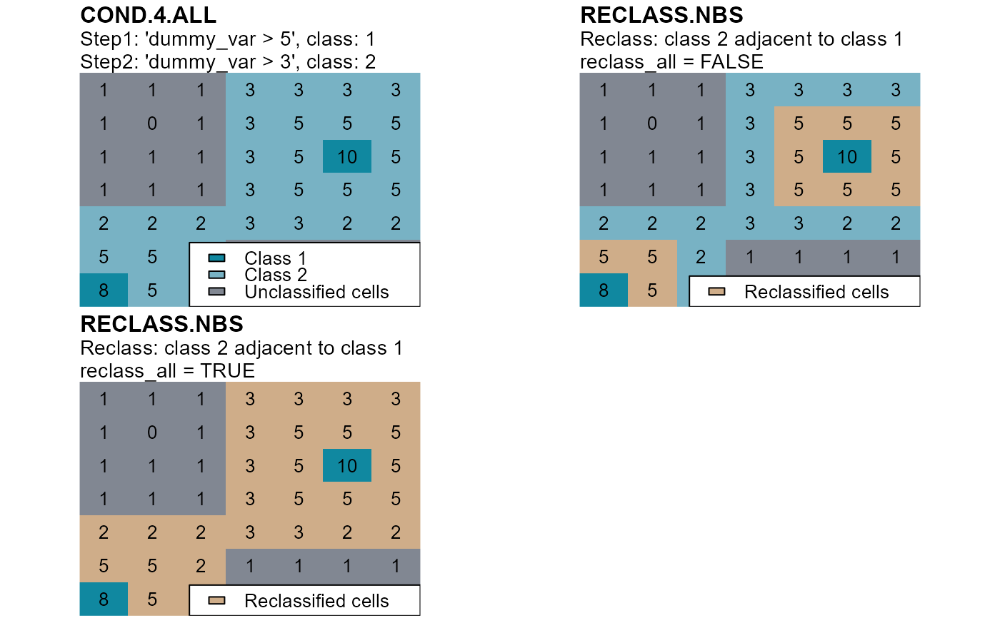

Evaluate if members of two classes are contiguous and, if they are, one of them is reclassified.
reclass.nbs(
attTbl,
ngbList,
rNumb = FALSE,
classVector,
nbs_of,
class,
reclass,
reclass_all = TRUE
)data.frame, the attribute table returned by the function
attTbl.
list, the list of neighborhoods returned by the function
ngbList.
logic, the neighborhoods of the argument ngbList are
identified by cell numbers (rNumb=FALSE) or by row numbers
(rNumb=TRUE) (see ngbList). It is advised to use row
numbers for large rasters.
numeric vector, defines the cells in the attribute table that have already been classified.
numeric or numeric vector, indicates the class(es) of focal and anchor cells.
numeric or numeric vector, cells of classes class
adjacent to cells belonging to one of the classes of nbs_of are
reclassified as indicated by the argument reclass.
numeric, the classification number to assign to all cells that meet the function conditions.
logic, all cells of class class are also
reclassified if they are connected to a reclassified cell.
Update classVector with the new cells that were classified by
the function.
The function evaluates if a cell of class
class is adjacent to a cell of class nbs_of and, if it is, it
is reclassifies as indicated by the argument reclass.
If the argument reclass_all = TRUE, all cells of class
class are also reclassified if they are connected to a reclassified
cell.
library(raster)
library(scapesClassification)
# LOAD THE DUMMY RASTER
r <- list.files(system.file("extdata", package = "scapesClassification"),
pattern = "dummy_raster\\.tif", full.names = TRUE)
r <- raster(r)
# COMPUTE THE ATTRIBUTE TABLE
at <- attTbl(r, "dummy_var")
# COMPUTE THE LIST OF NEIGBORHOODS
nbs <- ngbList(r)
# COMPUTE A CLASS VECTOR
################################################################################
# conditions: "dummy_var > 5"
# class: 1
cv <- cond.4.all(attTbl = at, conditions = "dummy_var > 5", class = 1)
# UPDATE THE CLASS VECTOR
################################################################################
# conditions: "dummy_var > 3"
# class: 2
cv <- cond.4.all(attTbl = at, conditions = "dummy_var >= 2", class = 2,
classVector = cv)
# RECLASSIFY CELL OF CLASS 2 ADJACENT TO CELL OF CLASS 1
################################################################################
# class: 2
# adjacent to class: 1
# new class: 3
# reclass_all = FALSE
# RECLASSIFY NEIGHBORS
rc1 <- reclass.nbs(attTbl = at,
ngbList = nbs,
# CLASS VECTOR COMPUTED WITH THE RULE "dummy_var > dummy_var{}"
classVector = cv,
# CELLS OF CLASS...
class = 2,
# ...ADJACENT TO CELLS OF ANOTHER CLASS...
nbs_of = 1,
# ...WILL BE RECLASSIFIED...
reclass = 3,
# NO MORE RECLASSIFICATIONS
reclass_all = FALSE)
# reclass_all = TRUE
# RECLASSIFY ALL NEIGHBORS
rc2 <- reclass.nbs(attTbl = at,
ngbList = nbs,
# CLASS VECTOR COMPUTED WITH THE RULE "dummy_var > dummy_var{}"
classVector = cv,
# CELLS OF CLASS...
class = 2,
# ...ADJACENT TO CELLS OF ANOTHER CLASS...
nbs_of = 1,
# ...WILL BE RECLASSIFIED...
reclass = 3,
# ...AND SO ALL CELLS OF CLASS 1 CONNECTED TO A RECLASSIFIED CELL
reclass_all = TRUE)
################################################################################
# CONVERT CLASS VECTORs INTO RASTERS
r_cv <- cv.2.rast(r, at$Cell,classVector = cv, plot = FALSE)
r_rc1 <- cv.2.rast(r, at$Cell,classVector = rc1, plot = FALSE)
r_rc2 <- cv.2.rast(r, at$Cell,classVector = rc2, plot = FALSE)
# SET PLOT LAYOUT
par(mfrow=c(2,2), mar=c(3, 2, 4, 2))
# PLOT RESULTS
# 1.
plot(r_cv, axes=FALSE, box=FALSE, legend = FALSE, asp = NA,
colNA="#818792", col=c("#1088a0", "#78b2c4"))
# REFERENCE PLOT 1
text(r)
title("STEPS 1&2. COND.4.ALL", adj = 0.0, line = 1,
sub="Step1. Rule: 'dummy_var > 5'; class: 1\nStep2. Rule: 'dummy_var > 3'; class: 2")
legend("bottomright", ncol = 1, bg = "white",
legend = c("Class 1", "Class 2", "Unclassified cells"),
fill = c("#1088a0", "#78b2c4", "#818792"))
# 2.
plot(r_rc1, axes=FALSE, box=FALSE, legend = FALSE, asp = NA,
colNA="#818792", col=c("#1088a0", "#78b2c4", "#cfad89"))
# REFERENCE PLOT 2
text(r)
title("STEP 3a. RECLASS.NBS", adj = 0.0, line = 1,
sub="reclass_all = FALSE ->\nreclass based on 'cell contiguity'")
legend("bottomright", ncol = 1, bg = "white",
legend = c("Class 1", "Class 2", "Reclassified cells",
"Unclassified cells"),
fill = c("#1088a0", "#78b2c4", "#cfad89", "#818792"))
# 3.
plot(r_rc2, axes=FALSE, box=FALSE, legend = FALSE, asp = NA,
colNA="#818792", col=c("#1088a0", "#78b2c4", "#cfad89"))
# REFERENCE PLOT 3
text(r)
title("STEP 3b. RECLASS.NBS", adj = 0.0, line = 1,
sub="reclass_all = TRUE ->\nreclass based on 'cell contiguity' and 'cell continuity'")
legend("bottomright", ncol = 1, bg = "white",
legend = c("Class 1", "Reclassified cells",
"Unclassified cells"),
fill = c("#1088a0", "#cfad89", "#818792"))
